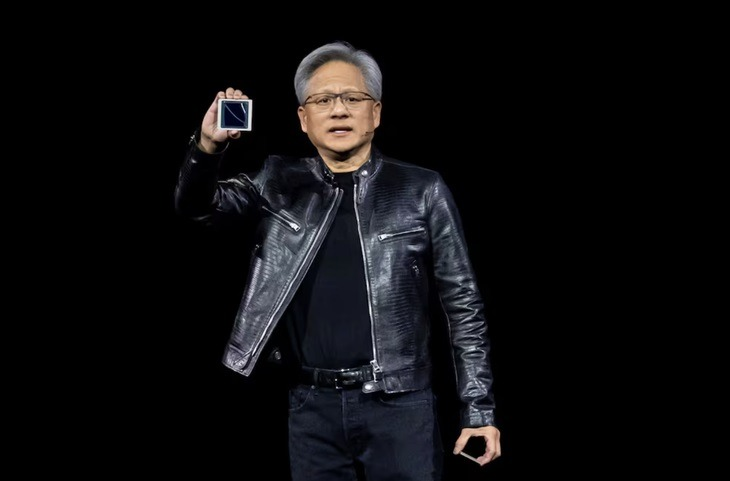

Blackwell: Новое поколение GPU для ИИ от Nvidia
На мероприятии GTC 2024 компания Nvidia представила новое поколение графических процессоров Blackwell, разработанных специально для работы в области искусственного интеллекта. Они обещают стать самыми мощными в мире. Генеральный директор компании, Дженсен Хуанг, описал их как "очень, очень мощные GPU". Эти новые чипы обладают значительной производительностью и энергоэффективностью по сравнению с предыдущими моделями. Архитектура GPU Blackwell получила название в честь американского математика Дэвида Блэквелла и включает в себя инновационные технологии для ускорения вычислений в различных областях, включая разработку ИИ-моделей. Чипы Blackwell смогут поддерживать модели с огромным количеством параметров, открывая новые возможности для разработки ИИ и работы с большими объемами данных. Компания также представила ускорители нового поколения на основе графических процессоров Blackwell, которые обещают значительное увеличение производительности и энергоэффективности по сравнению с предыдущими моделями на архитектуре Hopper. Новые ускорители будут способствовать созданию и обучению более крупных нейронных сетей, а также работе с различными моделями машинного обучения. Кроме того, Nvidia представила новое программное обеспечение, включая набор микросервисов NIM, который позволит упростить развертывание ИИ на различных процессорах, даже на более старых моделях. Это сделает использование ИИ доступным для более широкого круга клиентов и разработчиков.